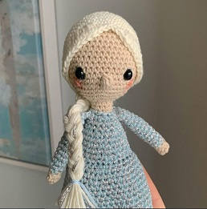
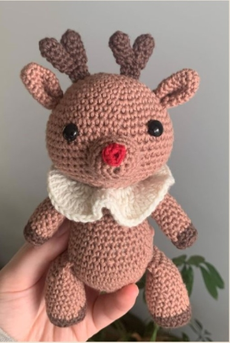
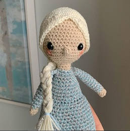
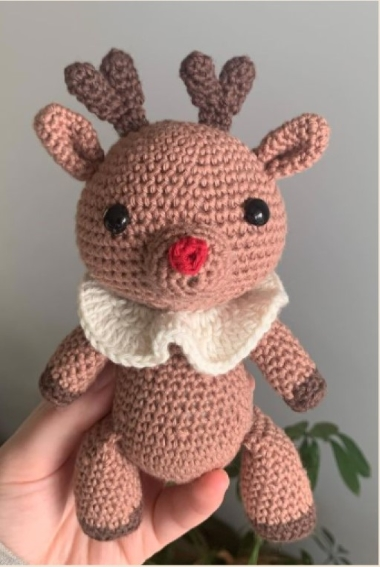

about me
I started my knitting journey in the midst of Covid. Like many others I was feeling bored and unmotivated in the lockdown. I decided to try and find my creative site and that’s where the knitting journey began. I taught myself how to knit from YouTube. I find my inspiration mainly from social media platforms and other knitters. I want to share my work with you and hopefully inspire you with my design.


inspiring women
rosa parks
After she refused to give up her seat to a white man on a bus in 1955 and started a movement for racial equality, the USA Congress honoured here as “the first lady of civil rights”.

queen elizabeth
Elizabeth is the longest-lived and longest-reigning British monarch and the longest-serving female head of state in world history. She is currently the reigning queen of sixteen independent states known as the Commonwealth realm.

Audrey Hepburn
Audrey Hepburn was a British actress and UNICEF ambassador, one of the most famous faces of the second half of the 20th century, an Oscar, Tony, Emmy and Grammy winner.

Billie Holiday
Billie Holiday was an American jazz singer and songwriter. Nicknamed Lady Day by her loyal friend, Holiday co-wrote only a few songs, that have become jazz standards, notably "God Bless the Child," "Don't Explain," and "Lady Sings the Blues.

tote bags
My handmade crocheted tote bags are from the new collection. They are a beautiful fashion accessory and serve well as a shopping bag. By wearing my tote bags you support an eco-friendly lifestyle. They are crocheted according to my own design from pure cotton yarn. The size of an unfilled bag is about 30 - 34 cm, the width is 25 cm.


bibs & rags
Making baby bibs is quick, practical and also so much fun, they are so quick to makeup up that you could create a set of baby bibs in no time for a friend’s baby shower or even as a gift once the baby is born. Below you can find my collection.


fairy tales & magic

 


